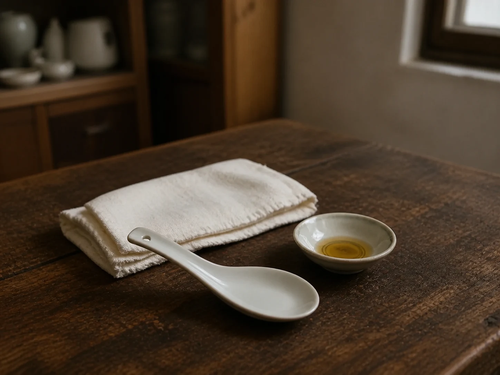

The Porcelain Spoon Beside the Oil Saucer
A white porcelain soup spoon rested beside a small saucer of oil, preserving the outline of a family gua sha custom without becoming an instruction.

A spoon outside the kitchen
The porcelain spoon came from the same cupboard as the soup bowls, but on certain evenings it was set beside a shallow saucer and folded cloth. Its white glaze showed a few gray scratches, and its broad edge was smooth from years of washing. Once placed there, nobody mistook it for part of dinner.
In our family, that arrangement announced gua sha, a scraping custom shared across China and other parts of East and Southeast Asia under several names. Families used different smooth-edged objects, including spoons and coins, and sometimes placed oil or water nearby. Those variations belong to household history, not to one standard method.
The custom inside one household
My aunt remembered the practice as something an older relative offered when the body felt tight or uncomfortable. The room grew quiet, the cloth protected the table, and the spoon was washed before it returned to the cupboard. Her account preserves the setting but does not reconstruct pressure, direction, or duration.
The Warm Towel Folded Over the Eyes records cloth assigned to a gentle pause, while Moxa Smoke in the Winter Room keeps an ash bowl and open window in view. The porcelain spoon belongs near those notes because an ordinary household object crossed into a health custom. Its familiar shape did not make the practice harmless or universally suitable.
Where the record must stop
Controlled studies of gua sha remain small, and reviews have found the evidence for pain insufficient or low in quality. The practice deliberately produces temporary red or purple spots beneath the skin and can also cause soreness, bruising, or broken skin. People who take blood thinners, have bleeding or circulation concerns, or have irritated skin need professional guidance rather than a family demonstration.
This page therefore keeps the spoon on the table. It offers no sequence to follow and no claim that scraping answers pain, fever, or another symptom. After the remembered evening, the saucer was emptied, the cloth went to the washbasin, and the spoon dried upside down beside the bowls it would rejoin at breakfast.